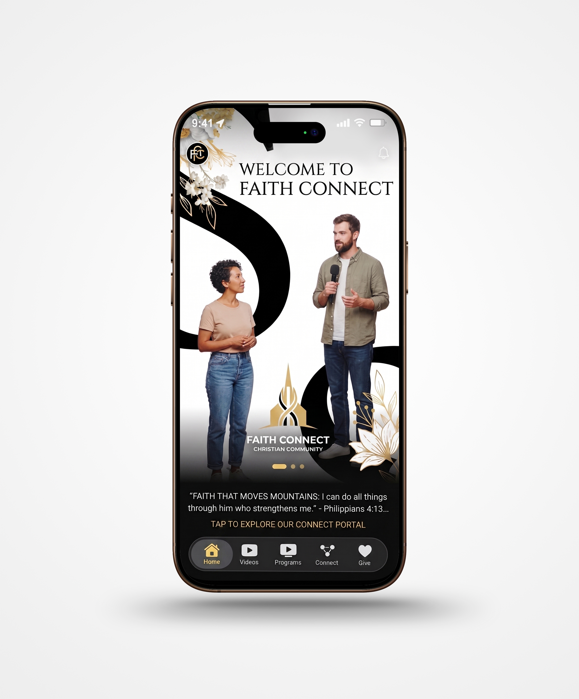
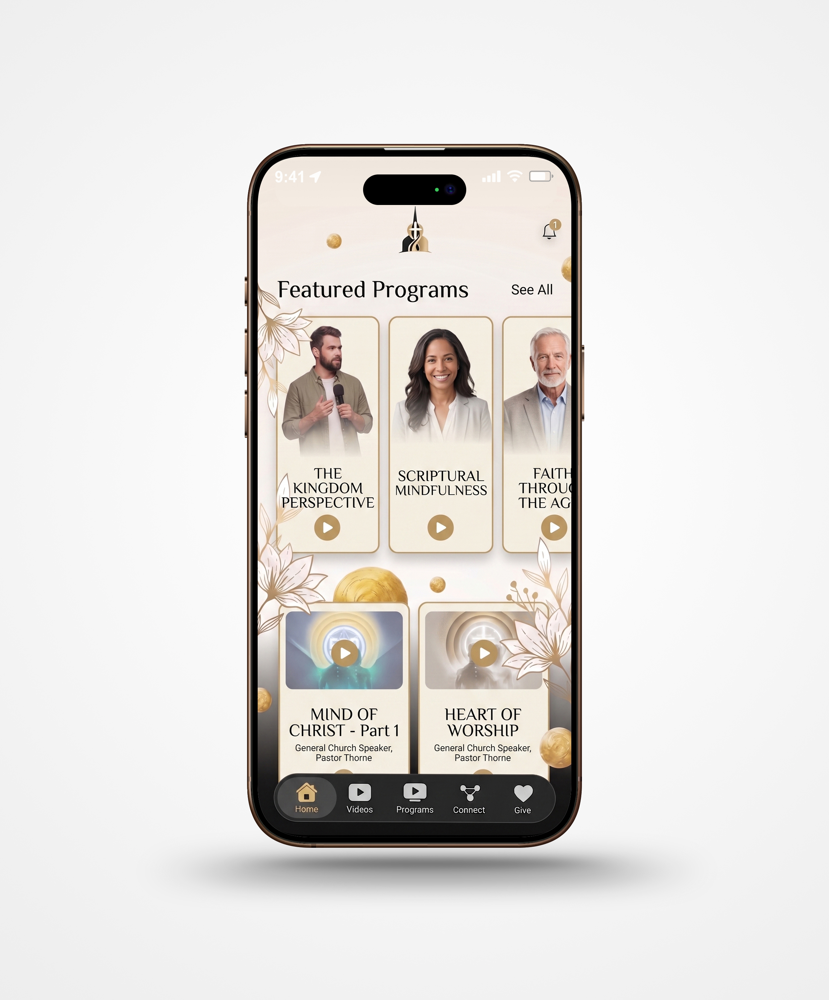

01
Scribe
Answers come from your sermon archive, so members stay inside your church voice and your teaching.
White-label church apps for iOS and Android
Selah packages your sermons, giving, updates, groups, programs, and live moments into a branded app your congregation can actually use. Scribe can be included as a study companion that answers from your uploaded teaching, not the open internet.
Paused at 18:42 | Luke 15 | Pastor Daniel Reyes
Inside the app
A member can catch up on Sunday, give, join a group, follow a study, or ask about a sermon without leaving your church's app.
White label, practically
The app your congregation opens carries your church's name: your icon, colours, language, content, and feature labels. Selah stays behind the scenes as the technology partner.
Sermons sit on YouTube. Announcements land in group chats. Giving happens somewhere else. Courses live in another portal. Selah brings those moments back under one familiar church experience.
One place to return to during the week.Flagship features
Each card is built around a specific church behavior: listening, asking, studying, sharing, and returning to teaching during the week.

Answers come from your sermon archive, so members stay inside your church voice and your teaching.

Pause at any point in a sermon or videocast and ask about the exact moment on screen.

Turn messages into daily study paths that keep people returning through the week.

House courses, series, recordings, and premium content in one branded library.

Use quizzes, streaks, and points to make teaching feel active and repeatable.
Only your teaching
Every Selah app can include Scribe, an AI-assisted study companion available day or night. Unlike a general-purpose chatbot, Scribe does not answer from the open internet or a worldwide database. It responds from the sermons your church has uploaded.
When someone asks, "What did Pastor say about forgiveness?", the answer comes from your pulpit, in your theology, in your voice.
You set the boundaries. We configure guardrails based on your church ethos and doctrinal position, so Scribe stays inside the lines your leadership draws.
"In Pastor Daniel's Easter series, grace is described as the first word God speaks over the returning heart."
Need Clarity?
Anyone listening can pause a sermon at any moment and ask Scribe about that exact section of the message: the verse just quoted, the point just made, or the word they did not understand.
It turns a question into a guided study moment without pulling the listener away from the message.
Sermon paused
"Why did Pastor connect adoption with prayer?"
Personal devotional journeys
Your congregation can receive daily devotionals generated from your church's sermon library or create guided study journeys around themes like forgiveness, prayer, identity, marriage, leadership, or generosity.
Your teaching keeps ministering seven days a week, not only during weekend services.
The Father sees the son while he is still far off. Before apology, before repair, before the story is cleaned up, mercy starts moving.
Core app modules
The everyday features are kept simple on purpose: easy to find, easy to update, and familiar to members.
Your name, logo, colours, icon, store listing, and feature labels. Selah stays invisible.
Host sermons, clips, teaching series, playlists, livestream links, and replays in one place.
Events, announcements, stories, newsletters, groups, chat rooms, and ministry updates.
Tithes, offerings, sowing, and campaign giving inside the app with less friction.
Create paid tiers for courses, programs, conference recordings, and deeper ministry resources.
Upload sermons, publish updates, manage content, and launch new resources without developers.
Tools for ministry
Members can listen, give, read, ask, join, and keep up without learning a new system for every ministry area.
Turn sermon archives into searchable answers, devotionals, study paths, pause-and-ask moments, and teaching resources.
A white-label mobile app with your name, icon, colours, store listing, and ministry language.
Host sermons, clips, replays, livestream links, teaching series, and playlists in one distraction-light space.
Support tithes, offerings, sowing, campaigns, and paid access inside the same app experience.
Events, announcements, groups, newsletters, stories, and updates come together in one branded hub.
Optional add-ons
Start with the essentials, then add deeper tools when there is a clear use for them.
Share your logo, colours, app name, feature names, and vision. We design it around your church.
Your sermon library goes in, Scribe learns from it, and your guardrails are configured to your doctrine.
Your app goes live on the App Store and Play Store. New sermons and updates sync automatically.
Offer paid programs when appropriate, keep giving close to the teaching journey, and make courses or conference recordings easier to find after the event.
What changes
"Selah gives churches a way to own their digital space, keep teaching central, and bring the whole ministry experience into one branded app."
It is your church's app. The public listing, app icon, colours, logo, and in-app experience all carry your church brand.
Yes. Since the platform is white-label, Scribe and other modules can be renamed to match your church language.
No. Scribe is AI-assisted, but it answers from the sermons your church uploads, not from the open internet.
You do. Guardrails are configured to your church's ethos and doctrinal position.
No. The back end is designed for regular church staff and volunteers.
Upload once through the back end; the app updates automatically for everyone using the app.
In a 30-minute demo, we will show you Scribe answering from real sermons, the Need Clarity pause-and-ask experience, paid programs, and what your app could look like with your church's name on it.